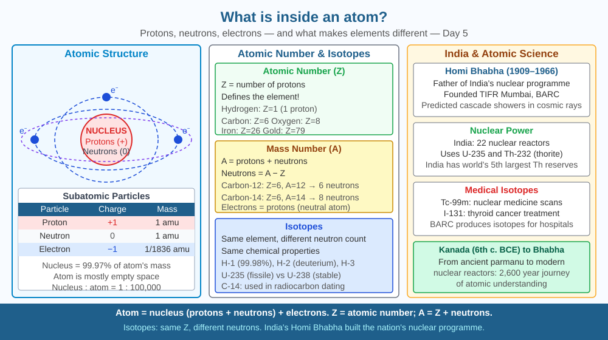

By the end of this lesson, you should be able to describe the structure of an atom, explain what protons, neutrons, and electrons do, and predict what changing the number of protons does to an element.
Gold stays gold no matter how finely you divide it. A single gold atom is still gold — it cannot be divided further and remain gold. But inside an atom is a whole world of structure. How is an atom built?
Atomic structure: - Nucleus: Tiny, dense centre (radius ~10⁻¹⁵ m) containing: - Protons: positive charge (+1), mass ≈ 1 u (atomic mass unit) - Neutrons: no charge, mass ≈ 1 u - Electron cloud: Electrons (charge −1, mass ≈ 0.0005 u) occupy shells (energy levels) around the nucleus
Atomic number (Z): Number of protons. Defines the element — carbon always has 6 protons, oxygen always has 8.
Mass number (A): Protons + neutrons. Determines atomic mass.
Electron shells (Bohr model): Shells can hold 2, 8, 8, 18... electrons. Electrons in the outermost shell (valence electrons) determine chemical properties.
Isotopes: Same element (same Z), different number of neutrons (different A). Carbon-12 and Carbon-14 are both carbon, but ¹⁴C has 2 extra neutrons → unstable → radioactive.
Think of an atom as a cricket stadium:
The key insight: the pitch (nucleus) is about 100,000 times smaller than the stadium (atom). Nearly all the atom is empty space. What feels solid is the electromagnetic force between electron clouds, not physical matter touching matter.
The SVG for this lesson shows a cross-section of a carbon atom drawn to conceptual (not true) scale so both nucleus and shells are visible simultaneously.
At the centre, a tightly packed cluster of six red spheres (protons) and six grey spheres (neutrons) forms the nucleus, labelled with its radius (~10⁻¹⁵ m) to contrast with the overall atomic radius (~10⁻¹⁰ m). Two concentric dashed circles represent the first and second electron shells, with two blue dots on the inner ring and four blue dots on the outer ring, each labelled with the electron symbol e⁻. An arrow points to the outer ring with the annotation "valence electrons = 4 → forms 4 bonds." A colour key in the corner identifies protons (red, +1 charge), neutrons (grey, 0 charge), and electrons (blue, −1 charge). A sidebar compares carbon-12 and carbon-14, showing the same electron arrangement but 6 vs 8 neutrons in the nucleus, with ¹⁴C flagged as radioactive.

India's nuclear programme (DAE — Department of Atomic Energy) is built on atomic science. The Bhabha Atomic Research Centre (BARC) in Mumbai operates nuclear reactors using uranium-235 and plutonium-239. India has 22 nuclear reactors producing ~6,780 MW of electricity. Nuclear medicine at AIIMS uses radioactive isotopes — Technetium-99m for bone scans, Iodine-131 for thyroid treatment. All of this comes from understanding atomic structure developed over the past century.
Every semiconductor chip manufactured at India's growing fab facilities (including the Tata Electronics plant in Dholera, Gujarat) depends on controlling the number of valence electrons in silicon atoms. Doping silicon with phosphorus (one extra valence electron) or boron (one fewer valence electron) creates n-type and p-type semiconductors — the building blocks of every transistor. Atomic structure is not abstract chemistry; it is the reason your phone works.
Model an atom with household items: a small ball at the centre (nucleus), threads or orbit lines at fixed distances, small beads on the threads (electrons). For carbon (Z=6): 6 protons + 6 neutrons in nucleus, 2 electrons in first shell, 4 in second. Notice the nucleus is tiny relative to the orbital distances — if the nucleus were the size of a golf ball, the first electron shell would be 1 km away.
Once built, try modelling nitrogen (Z=7): add one proton and one neutron to the nucleus, place the 7th electron in the second shell. Now count the valence electrons — 5 — and note that nitrogen needs 3 more to fill its shell, which is exactly why it forms three bonds in NH₃.
The Bohr model (1913) was a huge step but is not the full picture. Quantum mechanics (1920s–1930s) replaced orbits with orbitals — probabilistic regions where electrons are likely to be found. The Schrödinger equation describes the wavefunction of an electron, and Heisenberg's uncertainty principle states we cannot simultaneously know an electron's exact position and momentum. This seemingly abstract physics underlies every semiconductor and transistor — the foundation of India's entire electronics and IT industry.
Predict: If a silicon atom (Z=14, 4 valence electrons) were replaced in a chip by germanium (Z=32, also 4 valence electrons), the chip would still function because both are in Group 14 with identical valence electron counts. But germanium allows electrons to move more easily at room temperature. What advantage and what problem might this create for chip designers?
Which statement best describes an atom?
Correct answer: B
Why is understanding how atoms behave more useful than just memorising their definition?
Correct answer: C
If the number of protons in an atom were changed, what would you predict?
Correct answer: B
A student claims: "Carbon and nitrogen are almost identical atoms — carbon has 6 protons and nitrogen has 7, a difference of just one." Using atomic structure, write a detailed rebuttal. Explain how one extra proton changes the number of electrons, the valence electron count, the bonding behaviour, and the resulting compounds each element forms. Give at least two specific compounds as examples. Conclude with a general principle: what does this tell us about why atomic number, not atomic mass, determines an element's chemical identity?
The nucleus of an atom takes up roughly one ten-thousandth of a billionth of the atom's total volume — yet it contains 99.97% of the atom's mass. If you removed all the empty space from every atom in a human body and compressed just the nuclei together, the resulting object would be smaller than a grain of fine dust — yet it would weigh the same 70 kg. This is not a thought experiment; neutron stars are exactly this: the collapsed cores of dead stars where electron shells have been crushed away, leaving only nuclear-density matter about 20 km across but more massive than the Sun.
An atom's identity is set by its proton count alone — change the protons and you change the element, while valence electrons in the outer shell determine every chemical bond that atom can form.